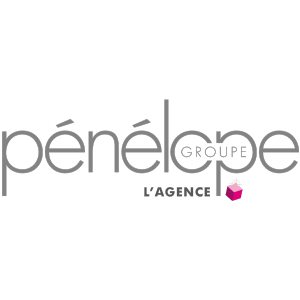
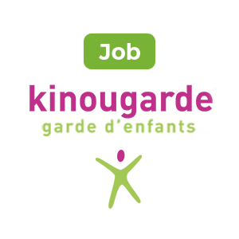

Expériences Extra-professionnelles
Hôtesse d'accueil, Pénélope
Paris, France
Janv. 2020 - Mars 2020
- Accueillir et informer les clients
- Orienter les clients
- Réception des colis
- Réservation de services
Baby-Sitter, Kinougarde
Paris, France
Oct. 2017 - Juil. 2019
Bénévolat
Paris, France
Janv. 2019 - Juin 2019
- Récolte de fonds dans la rue
- Recherche de partenaires
- Promotion de l'association sur les réseaux
Défilé de Mode
Lomé, Togo
Nov. 2016 - Fév. 2017
- Gestion d'équipe et délégation de rôles
- Recherche de sponsors
- Publicité à travers différent réseaux sociaux
- Aspect humanitaire
Présidente de L'Association Sportive et Culturelle
Lomé, Togo
Sept. 2016 - Juin 2017
- Organisation d'évènements sportifs et culturels
- Gestion d'équipe et délégation de rôles